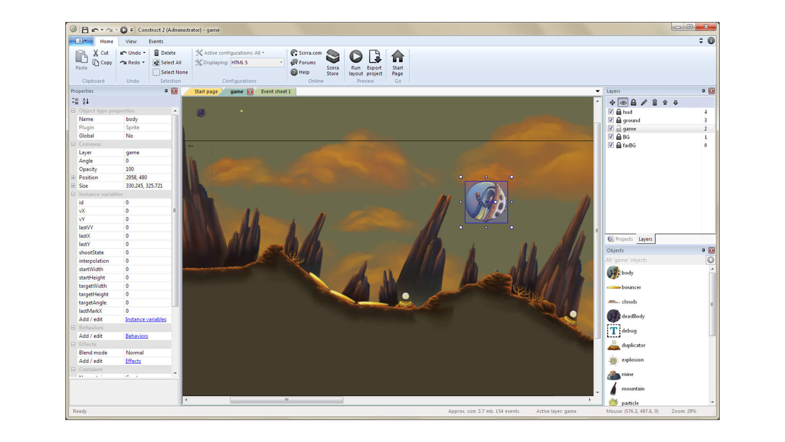

- 00 开篇词 跟我学，你也可以开发一款游戏！.md.html
- 复习课 带你梳理客户端开发的三个重点.md.html
- 第10讲 如何载入“飞机”和“敌人”？.md.html
- 第11讲 如何设置图像的前后遮挡？.md.html
- 第12讲 如何设置精灵的变形、放大和缩小？.md.html
- 第13讲 如何设置淡入淡出和碰撞检测？.md.html
- 第14讲 如何制作游戏资源包和保存机制？.md.html
- 第15讲 如何载入背景音乐和音效？.md.html
- 第16讲 如何在游戏中载入UI和菜单？.md.html
- 第17讲 如何用鼠标和键盘来操作游戏？.md.html
- 第18讲 如何判断客户端的网络连接？.md.html
- 第19讲 如何嵌入脚本语言？.md.html
- 第1讲 游戏开发需要了解哪些背景知识？.md.html
- 第20讲 脚本语言在游戏开发中有哪些应用？.md.html
- 第21讲 如何使用脚本语言编写周边工具？.md.html
- 第22讲 如何选择合适的开发语言？.md.html
- 第23讲 如何定制合适的开发协议？.md.html
- 第24讲 不可忽视的多线程及并发问题.md.html
- 第25讲 如何判断心跳包是否离线？.md.html
- 第26讲 如何用网关服务器进行负载均衡？.md.html
- 第27讲 如何制作游戏内容保存和缓存处理？.md.html
- 第28讲 热点剖析（一）：HTML5技术是如何取代Flash的？.md.html
- 第29讲 热点剖析（二）：如何选择一款HTML5引擎？.md.html
- 第2讲 2D游戏和3D游戏有什么区别？.md.html
- 第30讲 热点剖析（三）：试试看，你也可以编写一款HTML5小游戏！.md.html
- 第31讲 热点剖析（四）：安卓端和苹果端游戏开发有什么区别？.md.html
- 第32讲 热点剖析（五）：如何选择移动端的游戏引擎？.md.html
- 第33讲 热点剖析（六）：AR和人工智能在游戏领域有哪些应用？.md.html
- 第34讲 热点剖析（七）：谈谈微信小游戏的成功点.md.html
- 第35讲 热点剖析（八）：谈谈移动游戏的未来发展.md.html
- 第36讲 热点剖析（九）：谈谈独立开发者的未来发展.md.html
- 第3讲 游戏的发动机：游戏引擎.md.html
- 第4讲 底层绘图接口的妙用.md.html
- 第5讲 构建游戏场景的武器：地图编辑器.md.html
- 第6讲 从0开始整理开发流程.md.html
- 第7讲 如何建立一个Windows窗体？.md.html
- 第8讲 如何区分图形和图像？.md.html
- 第9讲 如何绘制游戏背景？.md.html
- 结束语 做游戏的过程就像是在雕琢一件艺术品.md.html
- 课后阅读 游戏开发工程师学习路径（上）.md.html
- 课后阅读 游戏开发工程师学习路径（下）.md.html
- 捐赠
第29讲 热点剖析（二）：如何选择一款HTML5引擎？
上周六，我详细介绍了[HTML5技术相比Flash技术的优势]，相信你已经对HTML5技术有一个大致的了解。下周六，我会带你编写一个HTML5游戏，在这之前，我们需要先了解几种常见的HTML5游戏引擎。
一些比较成熟的引擎，比如Cocos2d-JS、白鹭等，它们都提供有系列化的工具，比如编辑器、IDE等周边。但是其实大部分HTML5游戏引擎都只有图形引擎而已，比如legend.js。而且很多HTML5引擎只是个人编写的开源引擎，所以漏洞还是比较多的。
HTML5游戏引擎在编写的时候，除非用DOM（Document Object Model）纯原生编写，绝大部分都是使用JavaScript编写的。但是为了考虑各种程序员的需求，现在也有使用TypeScript、CoffeeScript、LiveScript等语言编写的HTML5引擎。
几款常见的HTML5游戏引擎
我们现在来看一下几款常见的HTML5游戏引擎。
Construct 2
这是一款收费的引擎，当然也有免费的版本，但是免费的版本不可用于商业用途。那么既然是商用引擎，那它一定会比免费开源的产品更加完善和易用。这里有一幅Construct 2的截图，你可以看一下它的界面。

我们可以清晰地看到，这个界面类似Office的操作界面。左侧是物件的属性，比如长宽高等；右侧上方是物件的层，包括背景、物件；右侧下方是物件选择器，你可以选择各种物件摆放到编辑器内。这种类型的编辑器，在成熟的商业引擎中比较常见，但是由于编写编辑器的人力物力成本，所以免费的引擎一般不提供这种成熟的编辑器。
从使用角度，我总结了一下它的特点，大概有这几条，供你自己制作HTML5游戏的时候选择：
可以设计任何类型的2D游戏，而且不需要编程的技能（可以由事件系统控制）；
使用简单的拖拽和事件系统就可以设计游戏逻辑；
拥有一个物理引擎，可以用来计算运动、旋转和碰撞反映；
可以在iOS、Android、Windows Store等多个平台上发布游戏；
拥有很完备的文档和教程案例。
在软件方面，它拥有一个非常直观的编辑器，可以开发高级的视觉效果，可以支持视差滚动的游戏，并且在编辑器中集成了调试器和profiler。做出来的游戏支持多人游戏，也支持2D的阴影，还支持JS SDK的插件。
Construct 2的不同版本，对应的功能也不相同。
第一个是免费版本的，它的使用没有时间限制，你可以使用100个事件、4个图层和2个着色器，随意导出成HTML5网页游戏，但是这些编写出来的游戏不可以用作商业用途。
第二个是个人版或者教育版：这个版本移除了免费版本的限制，甚至可以将项目导出至iOS、Android或者其他平台。如果你用作商业用途，可以允许你在商业用途中获得最高5000美元的收入。它可以使用调试器观察tab、profiler和事件断点，还可以制作多人游戏，在应用程序内可以嵌入内购功能。
最后一个是商业版本。所有特点与个人版本相同，但是没有上面说的那些限制。
Construct 2的缺点就是相关的中文教程不是很多，需要你自己去摸索。但是它支持多平台，简单易用，还提供了很强悍的事件系统，可以不通过代码来控制逻辑，所以不需要编程知识就可以使用。
白鹭引擎
白鹭引擎是我们国内自己研发的HTML5引擎。最初，它也是一套图形引擎，后来资本化之后，白鹭引擎就开始着手将引擎变成一套解决方案。
它不仅提供HTML5游戏引擎，也提供了各种周边工具和产品。除了图形引擎之外，它还提供了可视化编辑工具（Egret Wing）、动画制作工具（Dragon Bones）、HTML5游戏加速器（Egret Runtime）。
可视化编辑工具提供了代码调试功能。可以在文件中打断点、单步调试、跳入和跳出、查看局部变量、添加观察表达式等。当然你也可以自己编写扩展程序，可以对任何语言进行调试。可以让开发者用 Node.js + HTML 来开发IDE的扩展插件，然后实现各种提升效率的工具。
你还可以自定义语法高亮、智能提示和调试。它还内置了版本控制系统Git，集成命令行工具，可以同时打开多个命令行标签，执行需要的命令。
它甚至可以在Wing中直接运行Vim。它还内置多种主流的代码配色方案，满足大部分开发者配色习惯。开发者还可以自己编写配色扩展，你可以根据自己习惯，定制你的IDE。
白鹭的动画制作工具提供了动画和动漫的解决方案，打通了动画设计和游戏开发的工作流，也支持导出各种动画格式，提供了可交互动态漫画编辑器模式。你甚至不需要动画基础，轻松实现丰富特效。DragonBones可以输出多种格式，视频、网页、动画数据，可以用于几乎目前所有的主流游戏引擎和编程语言，提供了各个平台的运行库。
另外，还有一个HTML5加速器，这是一款支持3D的HTML5游戏加速器，解决低端机对HTML5标准支持不佳、体验差的弊端，加速器可以适配不同的系统让HTML5游戏效果媲美原生游戏，解决设备不统一，移动应用市场的设备、操作系统和屏幕的不统一的问题很严重， 已成为HTML5游戏开发者面临的难题，适配也成为美工最头痛的问题。
另外，越来越多的游戏和应用使用移动QQ、微信、微博等客户端作为入口。 不同客户端软件所携带的浏览器内核不同， 也直接影响HTML5游戏在平台上的表现。
而HTML5加速器直接支持HTML5游戏运行所需的底层功能，解决了屏幕适配和性能问题，并且也从渠道角度解决了HTML5游戏接入流程复杂， 定制化功能多的问题，实现一次接入，随时上线。
我们再来讲讲白鹭引擎本身。白鹭引擎支持2D、3D游戏，引擎本身采用模块化设计，egret也实现了脏矩阵方法，可以很大提升渲染性能。脏矩阵，简单描述就是，系统只渲染动画变化的部分，不变化的部分并不进行渲染更新。
白鹭引擎本身的功能和周边工具都很强大，中文教程和论坛也比较成熟，且支持2D、3D游戏的制作，现在也支持直接编写最流行的微信小游戏。在商业化方面，白鹭是做的比较成功的，所以现在的用户也非常多。
Cocos2d-JS
最后，我们来说一下Cocos2d-JS。
Cocos2d-JS是Cocos2d-x的一个分支，只要对HTML5游戏有所了解的话，基本都听说过Cocos2d-JS，很多开发人员也会选择Cocos2d-JS来进行开发HTML5游戏。
根据官方说法，它跨全平台，采用JavaScript语言，可发布到包括Web、iOS、Android、Windows Phone8、Mac、Windows等平台，引擎基于MIT开源协议，完全开源、免费、易学易用，拥有活跃的社区支持。
Cocos2d-JS让2D的游戏编程门槛更低，使用更加容易和高效。和其他类似游戏引擎相比，它定义了更加清晰的2D游戏编程的基本组件、易学易用的API，并且具备原生性能的脚本绑定技术，实现游戏的跨原生平台发布，开发效率更高，使用简单。
它本身融合了Cocos2d-HTML5和Cocos2d-x JavaScript Bindings（JSB），支持Cocos2d-x的所有核心特性并提供更简单易用的JavaScript风格API，基于Cocos2d-JS的框架，可以方便地使用JavaScript语言进行游戏开发，快速构建原型进行测试和验证。
由于Cocos2d-html5的API和Cocos2d-x JSB的API高度一致，开发出来的游戏不用修改代码或者修改少量代码就可打包为原生性能表现的混合游戏，发布到原生应用市场，这就是一次编码全平台部署的效果。
小结
这一节，我给你介绍了最流行的三款HTML5游戏引擎。
其中一款是商业引擎，另外两款可以自由使用。从难易角度讲，Construct 2拥有更方便的开发体验；从流行度讲，Cocos2d-JS和白鹭都属于国内最流行的HTML5游戏引擎。
你可以根据自己的需求来选择，如果美术熟悉Cocos2d-JS，或者想要快速上手2D游戏，可以选择Cocos2d-JS；如果对编程不太熟练，可以选择Construct 2；如果是拥有完整流程的开发公司，Cocos2d-JS和白鹭都可以选择。
最后，给你留一个小问题吧。
现在流行的微信小游戏，目前只支持3M左右的大小，否则就审核不过，那么如果在游戏资源大的情况下，有什么方案可以让游戏维持在3M大小呢？
欢迎留言说出你的看法。我在下一节的挑战中等你！
© 2019 - 2023 Liangliang Lee. Powered by gin and hexo-theme-book.